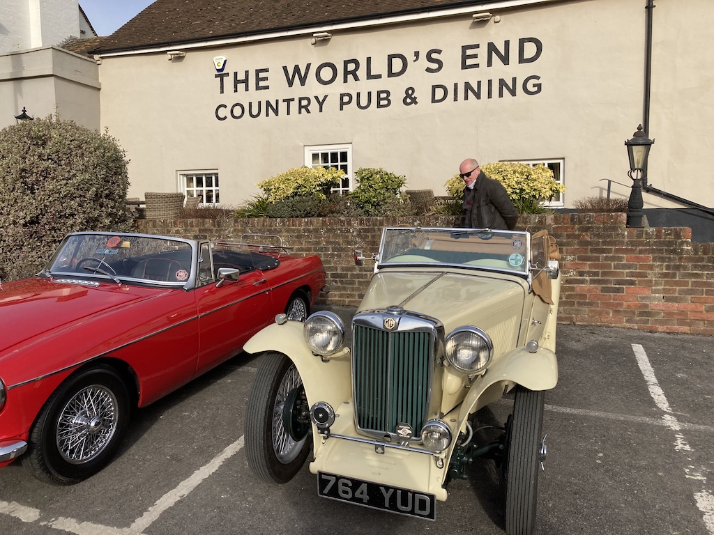
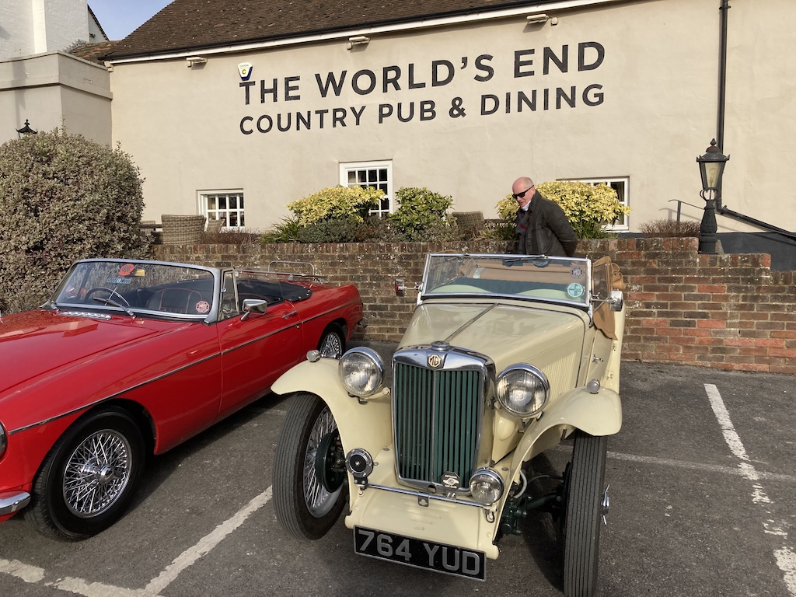
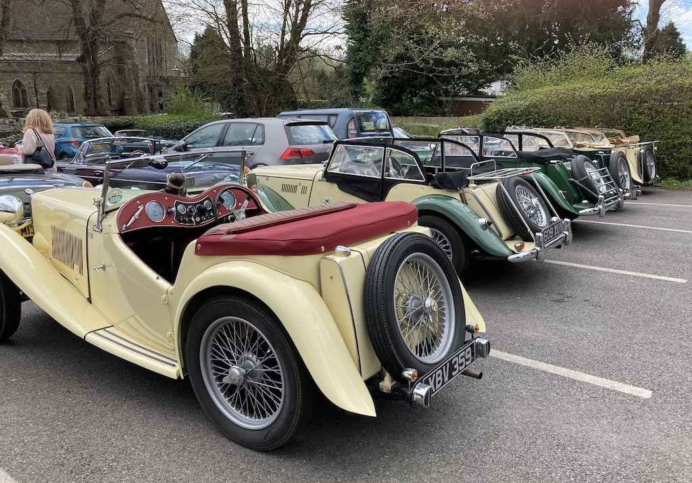
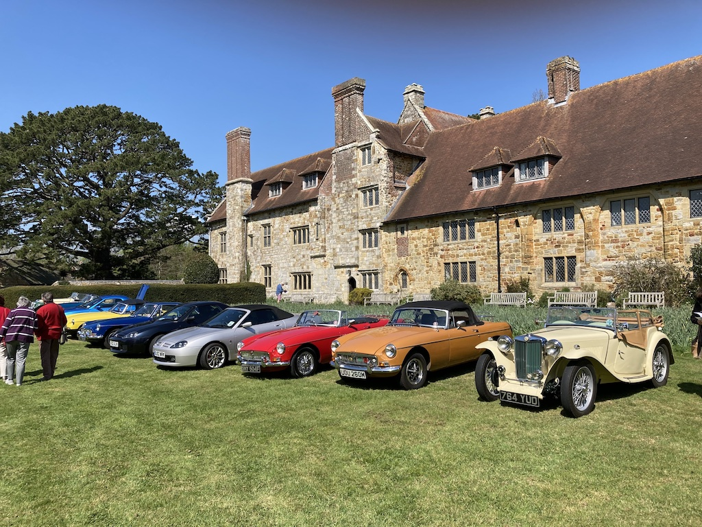

First Outing - 17th January
Normally this run would not justify an entry in these pages. However, under a clear blue sky and with little wind, I took the TC out for the first trip of the year. I only did 17 miles; up through Ashurst to Partridge Green and back down through Henfield. It took a while for the engine to warm up (there is no thermostat fitted), but it ran well. The only problem was the sun in my eyes on the way back south.
WSMGOC Pub Run - 28th January
 This was the first Pub Run since before the start of the Covid-19 pandemic. It was a fine, relatively sunny day, with a good turnout. There were 22 people and about ten MGs (plus a few other, more modern, makes). We had a good lunch, with plenty of chat, mainly about places, holidays and families.
This was the first Pub Run since before the start of the Covid-19 pandemic. It was a fine, relatively sunny day, with a good turnout. There were 22 people and about ten MGs (plus a few other, more modern, makes). We had a good lunch, with plenty of chat, mainly about places, holidays and families.
We took the smoother, main roads to Patching, but with the hood down, and arrived home at three thirty having done 25 miles.
Sussex Wanderers, Ashington to Warnham - 13th April
The March Sussex Wanderers outing (the first of the year) had just been for lunch at Adversane. However, on Wednesday April 13th I met David Farrer-Brown and the other MG owners at the Red Lion at Ashington for coffee David had brought his TR4A, which has a hard top, but since it was a fine day we did the run in the TC. The destination for lunch was at the Sussex Ox in Warnham, near Horsham. It was a good run, totalling 52 miles in all. I had lunch with Alan and his wife. He is blind, but still does work on his TD and has a good knowledge of TCs.
Drive It Day to Michelham Priory - 24th April
The WSMGOC had arranged to meet at Michelham Priory, north of Eastbourne. We decided to use the 'smoothest' route and so went along the A27, both going and on the way back. Luckily, as you can see, it was a fine day and we were able to park on the south lawn in front of the priory. A couple of MGBs arrived after I had taken this photo. After a view inside the house, lunch in the cafe and a walk around the grounds, we sat with other WSMGOC members on the terrace and chatted. We left home at about ten o'clock and arrived back around four, having done 62 miles.
Sussex Wanderers, Slindon to Chichester Yacht Club - 11th May
I met up with the other members at the Spur in Slindon for coffee. Richard Hobden also met me there. He was my navigator and it was the first time he had been in a TC. He had trouble getting in and out, so it may be his last. On route it started to rain, so we put the hood up. It was still raining when we left the Yacht Club, so the car was quite wet by the time that I got home. Including an initial trip to Beeding to get some petrol, I did a total of 78 miles. A good run, in spite of the rain.